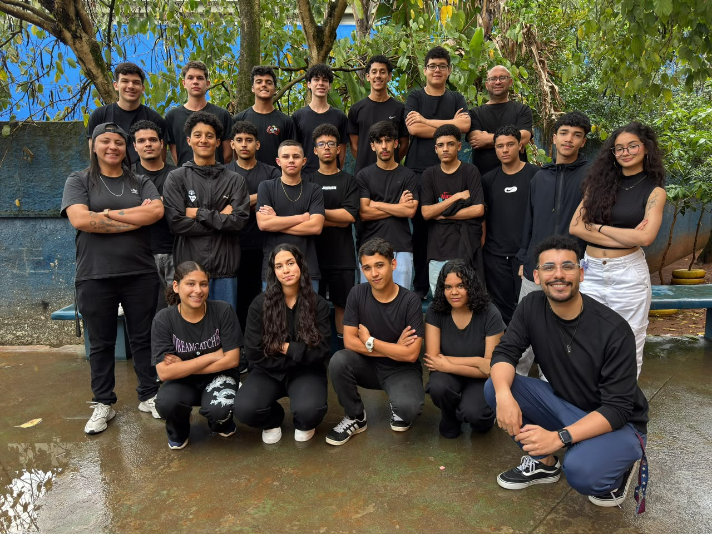
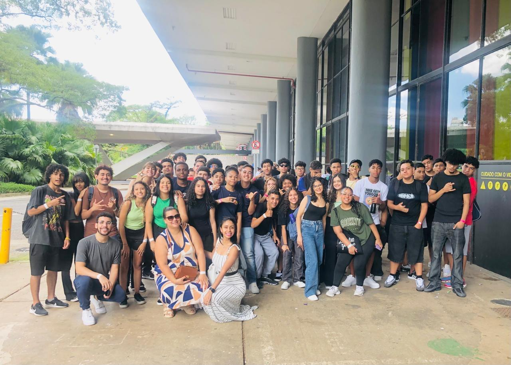
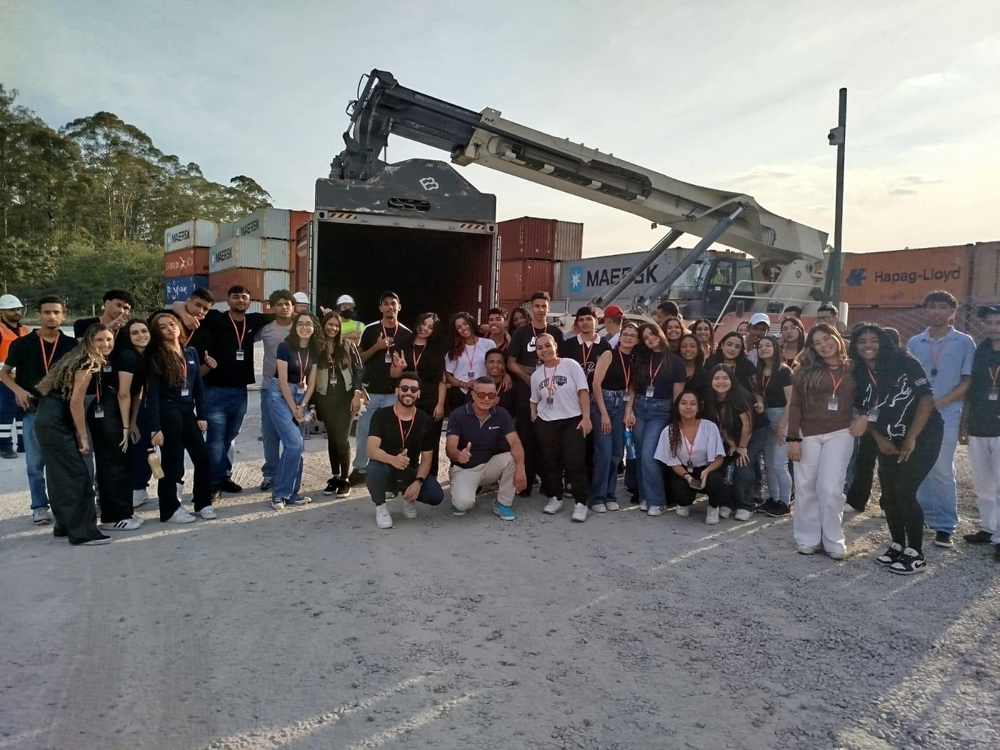
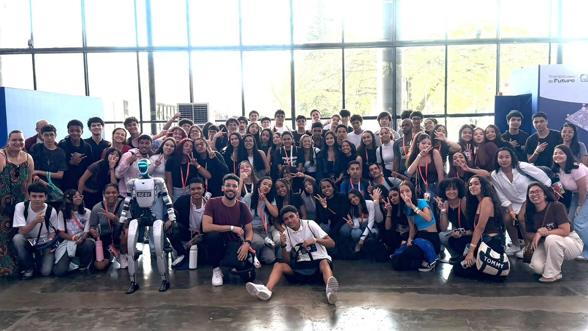
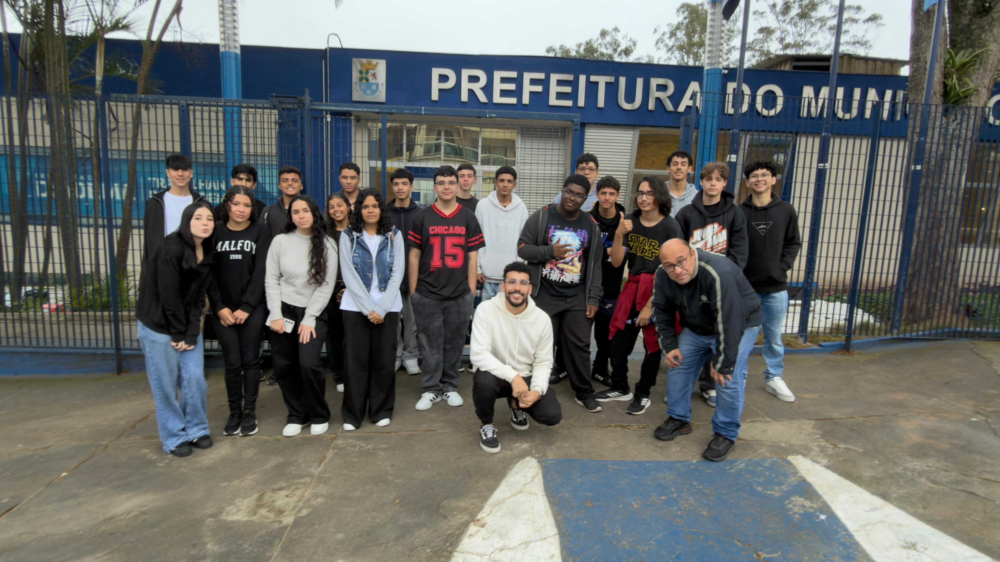
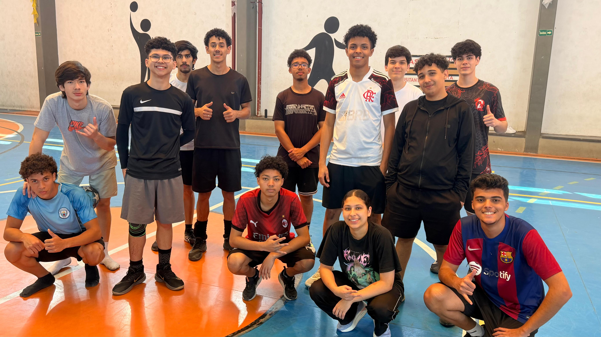
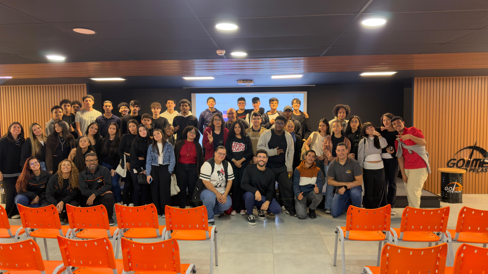
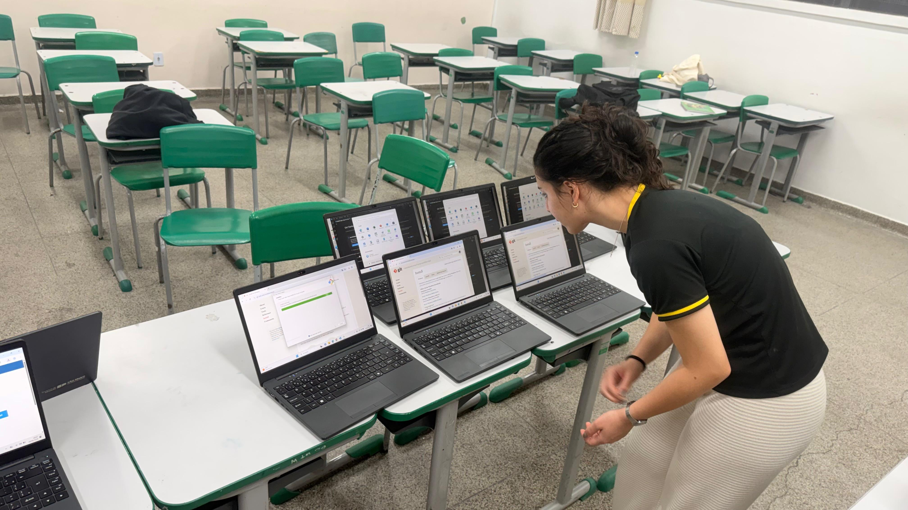
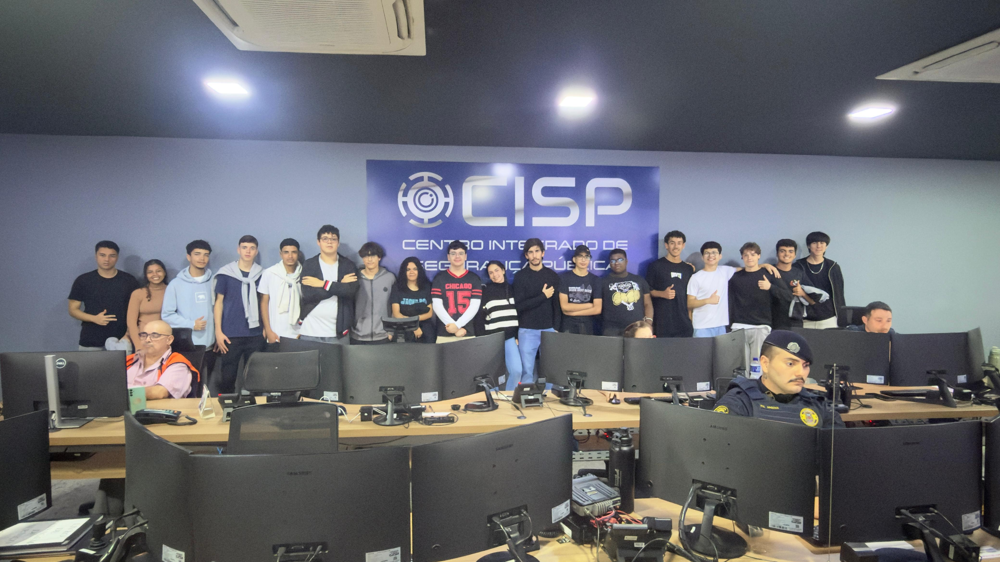
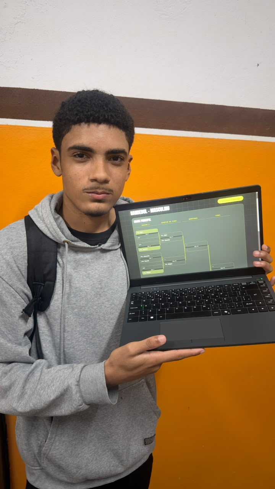

Desenvolvimento de Sistemas
Algoritmos, programação, aplicações web e boas práticas para transformar problemas em soluções digitais funcionais.
Engenheiro de Software, licenciado em Matemática e professor do Ensino Médio Técnico de Desenvolvimento de Sistemas.

Aplicando tecnologia na prática.
O projeto foi voltado à promoção da saúde, bem-estar e qualidade de vida por meio da tecnologia. O projeto reúne ferramentas interativas, calculadoras de saúde, conteúdos educativos e recursos para auxiliar na organização de atividades físicas.
Seu objetivo é tornar o acesso à informação e ao acompanhamento de hábitos saudáveis mais simples, intuitivo e acessível, proporcionando uma experiência prática e personalizada aos usuários.

Vivenciando a tecnologia.
A visita foi promovido pela Fundação Itaú, proporcionou aos estudantes uma experiência de aproximação com o mercado de trabalho e as profissões emergentes. Realizado no Pavilhão da Bienal, em São Paulo, o evento reuniu experiências interativas, palestras, oficinas e demonstrações tecnológicas.
A iniciativa buscou ampliar os horizontes profissionais dos participantes, estimular o protagonismo juvenil e conectar os conhecimentos desenvolvidos em sala de aula às oportunidades e transformações do mundo do trabalho.

Ampliando as vivências em tecnologia.
A visita técnica à multinacional Maersk, uma das maiores empresas de logística e transporte marítimo do mundo, proporcionou aos estudantes uma experiência de aproximação com o mercado de trabalho global. Durante a atividade, os alunos tiveram a oportunidade de conhecer a importância da tecnologia, da inovação e da automação nos processos logísticos e empresariais.
A iniciativa contribuiu para ampliar a visão profissional dos estudantes, conectando os conhecimentos adquiridos em sala de aula às práticas de uma organização multinacional e incentivando o desenvolvimento de competências para o futuro.

Vivenciando a tecnologia.
A visita foi promovido pela Fundação Itaú, proporcionou aos estudantes uma experiência de aproximação com o mercado de trabalho e as profissões emergentes. Realizado no Pavilhão da Bienal, em São Paulo, o evento reuniu experiências interativas, palestras, oficinas e demonstrações tecnológicas.
A iniciativa buscou ampliar os horizontes profissionais dos participantes, estimular o protagonismo juvenil e conectar os conhecimentos desenvolvidos em sala de aula às oportunidades e transformações do mundo do trabalho.

Ampliando as vivências em tecnologia.
A visita técnica ao Setor de Tecnologia da Prefeitura de Diadema proporcionou aos estudantes uma experiência de aproximação com a aplicação da tecnologia na administração pública. A atividade teve como objetivo apresentar a importância dos sistemas de informação, da infraestrutura tecnológica, da segurança de dados e da transformação digital na gestão municipal.
A experiência contribuiu para conectar os conhecimentos adquiridos em sala de aula às práticas profissionais, destacando o papel da tecnologia na modernização dos serviços públicos e no atendimento à população.

Buscando uma rotina saudável.
O Clube de Vôlei realizado aos domingos, é uma iniciativa que busca promover a integração, o protagonismo juvenil e o desenvolvimento de habilidades socioemocionais por meio do esporte. A atividade proporciona aos estudantes momentos de lazer, aprendizado e convivência, incentivando o trabalho em equipe, a disciplina, o respeito e a cooperação.
Além de estimular a prática esportiva, o projeto fortalece os vínculos entre os participantes e contribui para a formação cidadã em um ambiente acolhedor e participativo.

Ampliando as vivências em tecnologia.
A visita técnica à GoMec proporcionou aos estudantes uma experiência de aproximação com o setor automotivo e o ambiente empresarial. A atividade teve como objetivo ampliar a compreensão sobre os processos de gestão, organização de estoque, atendimento ao cliente e aplicação da tecnologia no comércio de peças automotivas.
A experiência contribuiu para conectar os conhecimentos adquiridos em sala de aula às práticas do mercado de trabalho, destacando a importância da inovação, do empreendedorismo e da eficiência na gestão empresarial.

Ampliando as vivências em tecnologia.
O projeto Maquinas Check é uma iniciativa voltada à manutenção preventiva e corretiva dos computadores utilizados no ensino técnico da unidade escolar. Realizado bimestralmente, o projeto envolve a limpeza dos equipamentos, formatação de sistemas operacionais, verificação de hardware e otimização do desempenho das máquinas.
Além de garantir o bom funcionamento dos laboratórios, a iniciativa proporciona aos estudantes experiências práticas em suporte técnico, manutenção de computadores e infraestrutura de TI, estimulando a responsabilidade, o protagonismo juvenil e a aplicação dos conhecimentos adquiridos em sala de aula.

Ampliando as vivências em tecnologia.
A visita técnica ao Centro Integrado de Segurança Pública (CISP) da Guarda Civil Municipal (GCM) proporcionou aos estudantes uma experiência de aproximação com a aplicação da tecnologia na segurança pública. A atividade teve como objetivo apresentar o funcionamento dos sistemas de videomonitoramento, das centrais de operações e das ferramentas tecnológicas utilizadas na prevenção de ocorrências e na proteção da população.
A experiência contribuiu para conectar os conhecimentos adquiridos em sala de aula às práticas profissionais, destacando a importância da inovação, da integração de informações e da tecnologia na gestão da segurança pública.

Solucionando problemas com tecnologia.
O Projeto Interclasse On-line é uma iniciativa que utiliza a tecnologia para modernizar e automatizar a organização das competições esportivas da unidade escolar. O sistema está sendo desenvolvido para realizar sorteios automáticos, gerenciar equipes, controlar partidas e disponibilizar resultados e classificações em tempo real.
A plataforma permitirá que toda a comunidade escolar acompanhe os jogos ao vivo, promovendo transparência, interatividade e integração. O projeto conecta os conhecimentos de Desenvolvimento de Sistemas às necessidades da escola, incentivando a inovação e o protagonismo estudantil.
Explorar possibilidades, resolver problemas e ajudar outras pessoas a construírem conhecimento.
Algoritmos, programação, aplicações web e boas práticas para transformar problemas em soluções digitais funcionais.
Raciocínio lógico, resolução de problemas e conexões entre a teoria matemática e desafios do cotidiano.
Dados, análise, visualização e pensamento analítico para descobrir padrões e apoiar decisões inteligentes.
Conheça alguns dos tipos de projetos que conectam tecnologia, educação e matemática.
Espaço reservado para apresentar uma aplicação criada com HTML, CSS, JavaScript ou frameworks.
Espaço reservado para uma atividade interativa, sequência de aulas ou material digital de aprendizagem.
Espaço reservado para um painel, visualização ou estudo exploratório com dados e matemática.
Tem um projeto, uma proposta educacional ou quer trocar experiências sobre tecnologia e matemática? Entre em contato.
Enviar um e-mail ↗